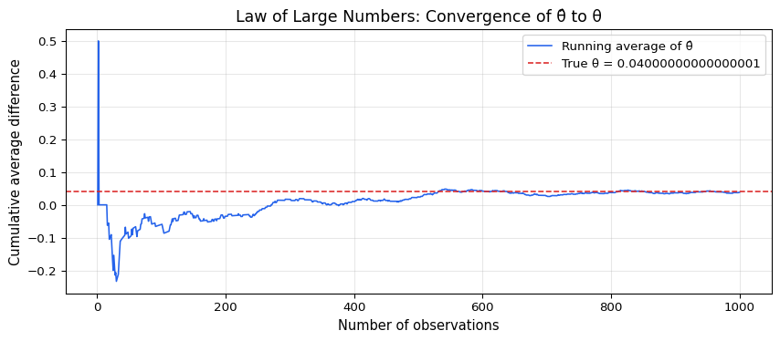
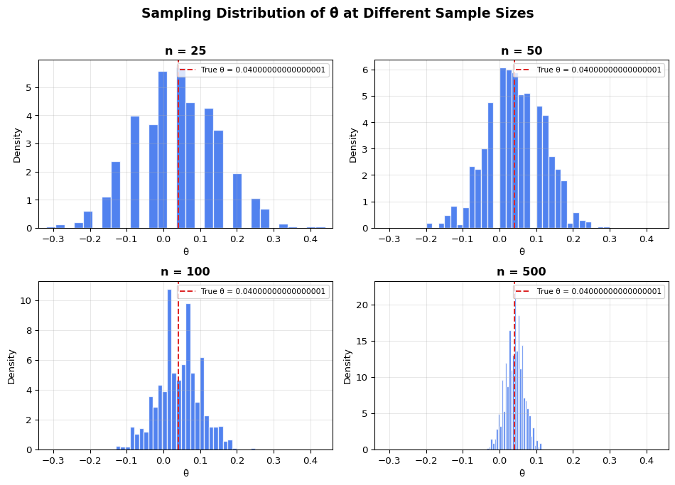

Simulating Key Ideas from Classical Frequentist Statistics
Author
Aidan Teeger
Published
April 24, 2026
Introduction
I run a personal website, and on my landing page there’s a spot where visitors can sign up to receive my newsletter. Getting more sign-ups is a priority, and I’ve been wondering whether the wording of the call to action (CTA) makes a difference. Right now, two options are on the table:
CTA A: “Sign up for my newsletter here!”
CTA B: “Stay in the loop — sign up now!”
Rather than guessing which one is better, I want to let the data decide. The way to do this is with an A/B test: each visitor who lands on my site is randomly assigned to see one of the two CTAs, and I track whether they sign up or not. After enough visitors have come through, I compare the sign-up rates between the two groups. If one CTA has a meaningfully higher rate, I’ll switch to it permanently.
In this post, I’ll walk through the key statistical ideas behind an A/B test — from setting up the problem to running a hypothesis test — all using simulated data so we can see exactly how the machinery works.
The A/B Test as a Statistical Problem
Let’s frame this more formally. Each visitor to my site either signs up or doesn’t, so we can model each visitor’s outcome as a draw from a Bernoulli distribution with parameter \(\pi\), the probability of signing up.
Because the CTA a visitor sees may influence whether they sign up, we allow the sign-up probability to differ across groups: visitors who see CTA A have sign-up probability \(\pi_A\), and visitors who see CTA B have sign-up probability \(\pi_B\). Each visitor’s outcome is either 1 (signed up) or 0 (did not).
The quantity we care about is the difference in sign-up rates between the two CTAs:
\[
\theta = \pi_A - \pi_B
\]
Our estimator of \(\theta\) is the difference in sample means:
\[
\hat\theta = \bar{X}_A - \bar{X}_B
\]
Since every observation is either 0 or 1, the sample mean in each group is just the proportion of visitors who signed up — so \(\bar{X}_A = \hat\pi_A\) and \(\bar{X}_B = \hat\pi_B\).
Simulating Data
In the real world, we wouldn’t know the true values of \(\pi_A\) and \(\pi_B\) — the whole point of running the experiment would be to estimate them. But for this exercise, we’ll set the true values ourselves so we can study how our estimator behaves when we know the ground truth.
Suppose \(\pi_A = 0.22\) and \(\pi_B = 0.18\), so the true difference is \(\theta = 0.04\). That is, CTA A truly produces a 4 percentage-point higher sign-up rate than CTA B. Let’s simulate 1,000 visitors for each group.
CTA A sign-up rate: 0.216
CTA B sign-up rate: 0.178
Estimated difference (θ̂): 0.0380
True difference (θ): 0.0400
We now have our simulated data in hand. Let’s use it to explore some foundational ideas in frequentist statistics.
The Law of Large Numbers
The Law of Large Numbers (LLN) tells us that as the sample size grows, the sample mean converges to the population mean. This is what gives us confidence that our estimator \(\hat\theta = \bar{X}_A - \bar{X}_B\) will be close to the true \(\theta\) when our sample is large enough.
To see this in action, let’s compute the element-wise differences between the CTA A and CTA B draws, then track how the running average evolves as we include more and more observations.
import matplotlib.pyplot as pltdiffs = cta_a - cta_bcumulative_avg = np.cumsum(diffs) / np.arange(1, n +1)

The plot shows exactly what the LLN predicts. With only a handful of observations, the running average bounces around wildly — a few lucky or unlucky sign-ups can swing the estimate dramatically. But as the sample size grows into the hundreds and thousands, the estimate settles down and converges toward the true difference of 0.04. This is why sample size matters: with enough data, our estimator becomes reliable.
Bootstrap Standard Errors
Now that we trust our estimator, the next natural question is: how precise is it? A point estimate of \(\theta\) by itself doesn’t tell us much — we’d also like a confidence interval that communicates our uncertainty.
The bootstrap is a resampling method that lets us estimate the variability of a statistic without needing a closed-form formula. The idea is simple: since we can’t re-run the experiment thousands of times in real life, we simulate that process by resampling (with replacement) from the data we already have. Each resample gives us a new estimate, and the spread of those estimates tells us how much our statistic tends to vary from sample to sample.
Bootstrapped standard error: 0.0177
Analytical standard error: 0.0178
Point estimate (θ̂): 0.0380
95% Confidence interval: [0.0034, 0.0726]
The bootstrapped and analytical standard errors are very close to each other, which is reassuring — the bootstrap is doing a good job of approximating the true sampling variability without relying on the formula.
Using the bootstrapped standard error, we can construct a 95% confidence interval for \(\theta\). This interval was constructed with a method that, if we repeated the entire experiment many times, would capture the true \(\theta\) about 95% of the time. Note that this is a statement about the method, not about any single interval — the true \(\theta\) is either inside our interval or it isn’t.
The Central Limit Theorem
The Central Limit Theorem (CLT) tells us something remarkable: regardless of the shape of the underlying population distribution, the sampling distribution of the sample mean becomes approximately Normal as the sample size grows. Since our estimator \(\hat\theta\) is a difference in sample means, the CLT applies to it as well.
Let’s see this in action by simulating the sampling distribution of \(\hat\theta\) at four different sample sizes: \(n \in \{25, 50, 100, 500\}\). For each sample size, we’ll run 1,000 experiments and plot a histogram of the resulting estimates.

The progression across these four panels tells the CLT story clearly. At \(n = 25\), the histogram is rough and jagged — the distribution hasn’t had enough data to smooth out. By \(n = 50\) and \(n = 100\), the shape is starting to look more symmetric and bell-like. And at \(n = 500\), the histogram is unmistakably Normal, tightly centered around the true \(\theta = 0.04\). This is the Central Limit Theorem at work: no matter that the underlying data are binary (0s and 1s, not Normally distributed at all), the sampling distribution of the mean difference approaches a Normal distribution as \(n\) grows.
Hypothesis Testing
Now that we’ve seen the CLT in action — that the sampling distribution of \(\hat\theta\) is approximately Normal for large samples — we can use this result to perform a formal hypothesis test.
The idea is straightforward. We set up two competing claims: a null hypothesis\(H_0: \theta = 0\), which says the two CTAs produce the same sign-up rate, and an alternative hypothesis\(H_1: \theta \neq 0\), which says they don’t. The goal is to determine whether our data provide enough evidence to reject \(H_0\).
To do this, we standardize our estimate to form a test statistic:
\[
z = \frac{\hat\theta - 0}{SE(\hat\theta)}
\]
Why do we standardize? Let’s walk through the logic step by step:
By the CLT, we know that \(\hat\theta\) is approximately Normal for large samples. Under \(H_0\), the mean of that distribution is 0.
When we divide a Normal random variable by its standard deviation, we get a standard Normal\(N(0,1)\). So under \(H_0\), \(z \;\dot\sim\; N(0,1)\).
This is powerful because it means we know the distribution of our test statistic under the null — and that’s exactly what we need to compute a p-value.
You might hear this called a “t-test,” but technically in our setting it’s closer to a z-test. The classical t-test arises when the data are drawn from a Normal distribution and the variance must be estimated — the ratio then follows an exact t-distribution. Here, our data are Bernoulli (not Normal), so there is no exact t-distribution result. The CLT gives us approximate Normality, and since we estimate the standard error from the data, what we’re really doing is a z-test. In practice, for large samples the t-distribution and the standard Normal are nearly identical, so the distinction has little practical consequence — but it’s important to understand why.
from scipy import statsz_stat = theta_hat / analytical_sep_value =2* (1- stats.norm.cdf(abs(z_stat)))print(f"Test statistic (z): {z_stat:.4f}")print(f"P-value: {p_value:.4f}")if p_value <0.05:print(f"\nAt α = 0.05, we reject H₀. There is statistically significant")print(f"evidence that the two CTAs produce different sign-up rates.")else:print(f"\nAt α = 0.05, we fail to reject H₀. We do not have sufficient")print(f"evidence to conclude the two CTAs produce different sign-up rates.")
Test statistic (z): 2.1388
P-value: 0.0325
At α = 0.05, we reject H₀. There is statistically significant
evidence that the two CTAs produce different sign-up rates.
The T-Test as a Regression
It turns out that the two-sample test we just performed is mathematically equivalent to a simple linear regression. Understanding this connection is useful because the regression framework uses the same machinery — and the same software — to perform hypothesis tests, and it generalizes naturally to more complex experimental designs with additional controls, interactions, or treatment arms.
Here’s the setup. We stack the CTA A and CTA B data into a single dataset with two columns: an outcome \(Y_i\) (1 if the visitor signed up, 0 otherwise) and an indicator \(D_i\) (1 if the visitor saw CTA A, 0 if they saw CTA B). Then we fit:
\[
Y_i = \beta_0 + \beta_1 D_i + \varepsilon_i
\]
The coefficients have a clean interpretation:
\(\beta_0\) is the expected value of \(Y_i\) when \(D_i = 0\) — i.e., the mean of the B group, which estimates \(\pi_B\).
\(\beta_0 + \beta_1\) is the expected value of \(Y_i\) when \(D_i = 1\) — i.e., the mean of the A group, which estimates \(\pi_A\).
Therefore \(\beta_1 = \pi_A - \pi_B = \theta\), and the OLS estimate \(\hat\beta_1\) is numerically identical to \(\hat\theta = \bar{X}_A - \bar{X}_B\).
import statsmodels.api as smimport pandas as pdY = np.concatenate([cta_a, cta_b])D = np.concatenate([np.ones(n), np.zeros(n)])X = sm.add_constant(D)model = sm.OLS(Y, X).fit()print(model.summary().tables[1])print(f"\nFrom the two-sample approach:")print(f" θ̂ = {theta_hat:.4f}, SE = {analytical_se:.4f}, z = {z_stat:.4f}, p = {p_value:.4f}")print(f"\nFrom the regression:")print(f" β̂₁ = {model.params[1]:.4f}, SE = {model.bse[1]:.4f}, t = {model.tvalues[1]:.4f}, p = {model.pvalues[1]:.4f}")
==============================================================================
coef std err t P>|t| [0.025 0.975]
------------------------------------------------------------------------------
const 0.1780 0.013 14.161 0.000 0.153 0.203
x1 0.0380 0.018 2.138 0.033 0.003 0.073
==============================================================================
From the two-sample approach:
θ̂ = 0.0380, SE = 0.0178, z = 2.1388, p = 0.0325
From the regression:
β̂₁ = 0.0380, SE = 0.0178, t = 2.1377, p = 0.0327
The coefficient estimate \(\hat\beta_1\) matches \(\hat\theta\) exactly. The standard errors and test statistics are very close, with any small difference arising from the fact that standard OLS assumes a single pooled variance across both groups, while the two-sample formula we used earlier allows separate variances for each group. For large, roughly balanced samples like ours, this distinction is negligible.
This equivalence matters because the regression framework makes it easy to extend the analysis. Want to control for the day of the week? Add it to the model. Want to test three CTAs instead of two? Add another indicator. The inference machinery stays the same.
The Problem with Peeking
Your boss is impatient. Rather than waiting until all 1,000 visitors have been assigned to each group, she wants to check the results after every 100 visitors per group — peeking at \(n = 100, 200, 300, \ldots, 1000\) (10 tests in total). If any of those tests comes back significant at \(\alpha = 0.05\), she wants to declare a winner and stop the experiment early.
This sounds reasonable, but it’s actually a serious problem under classical frequentist statistics. A single test at \(\alpha = 0.05\) has a 5% chance of producing a false positive — rejecting \(H_0\) when it’s actually true. But when you peek multiple times, each peek is another opportunity to get a false positive. The overall probability of at least one false rejection across all the peeks is much higher than 5%.
Let’s demonstrate this with a simulation. We’ll set up a world where the null hypothesis is true (\(\pi_A = \pi_B = 0.20\), so \(\theta = 0\)), run 10,000 experiments, and in each one we peek 10 times.
The false positive rate under peeking is substantially higher than the nominal 5% — roughly double or more. This means that if there is truly no difference between the two CTAs, the peeking strategy will still “find” a significant result a disturbingly large fraction of the time.
This happens because each peek is a new test on overlapping data. Even though the data are accumulating, the tests are not independent, and the more times you look, the more chances you have to catch a random fluctuation that happens to cross the significance threshold. This is a form of the multiple comparisons problem.
The practical takeaway is clear: decide your sample size before the experiment starts, and don’t peek at the results until the data collection is complete. If early stopping is genuinely important for your business, there are methods designed to handle it (like sequential testing or Bayesian approaches), but the classical fixed-sample test is not built for it.